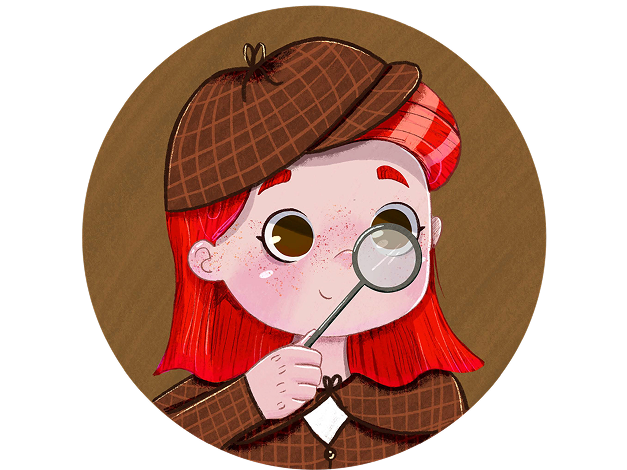
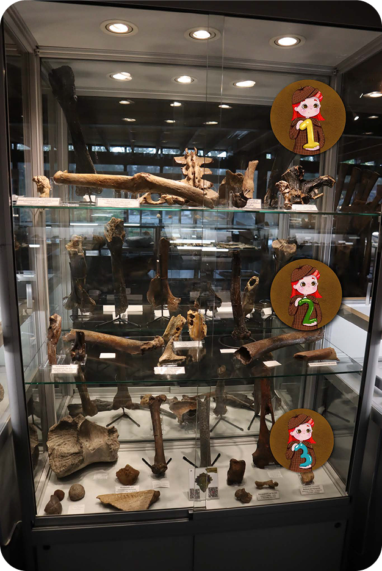
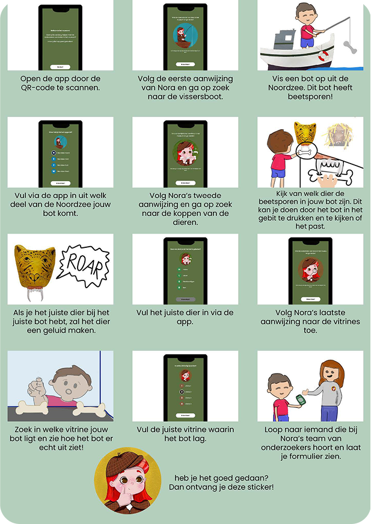
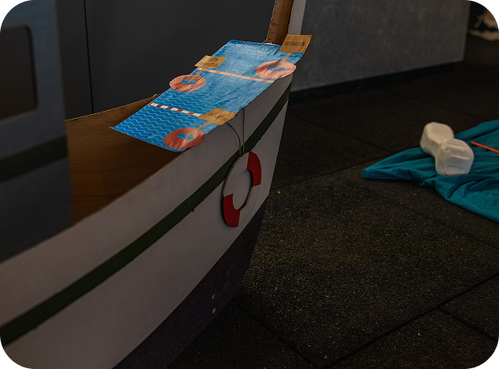
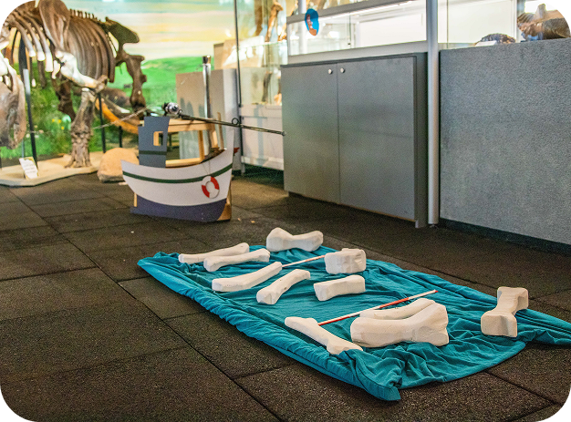
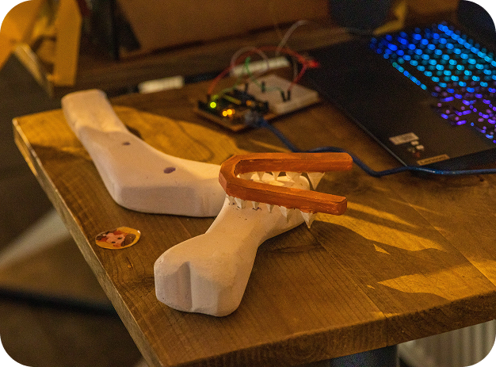
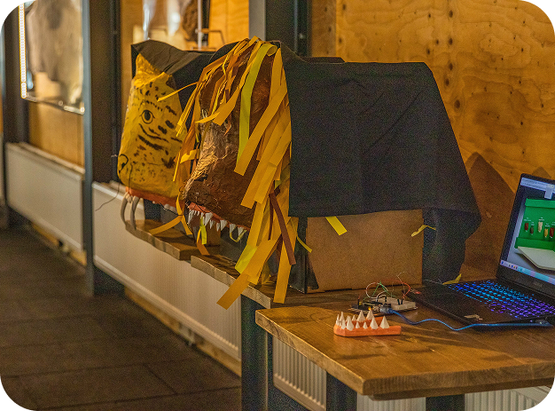
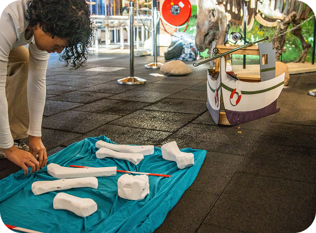

Back to projects
Back to projects
Oertijdmuseum - interaction design/museum design
Together with a team, I designed an interactive museum experience for the Oertijdmuseum. The experience invites children and their parents to explore the world of the North Sea during the Pleistocene. Our concept combines physical activity throughout the museym with an supporting app.
In the app, visitors receive a message from Nora: a researcher who needs their help identifying a found bone. Using visual clues, children and their parents are guided to three locations in the museum, where they have to complete a few assignments. Each activity encourages families to work together while introducing them to the prehistoric North Sea to discover the animals that once lived there and the bite marks found on fossilised bones.
First, visitors use a fishing rod to retrieve a bone. They then examine its bite marks and compare them with those of different prehistoric predators. They're is a wall displaying different animal heads, positioned at different heights to encourage children and adults to work together. When the bone is matched with the correct animal, an Arduino-powered system triggers the predator's roar. In the final part of the experience, visitors discover the real fossil displayed in the museum. This connects the story and activities directly to the museum’s permanent collection. After completing all the assignments, children receive a sticker from researcher Nora as a reward.
With this interactive trail, we aimed to make the history of the North Sea and the world of fossils more accessible, engaging and memorable for young visitors and their parents.

Museum exposition (proof of concept)






